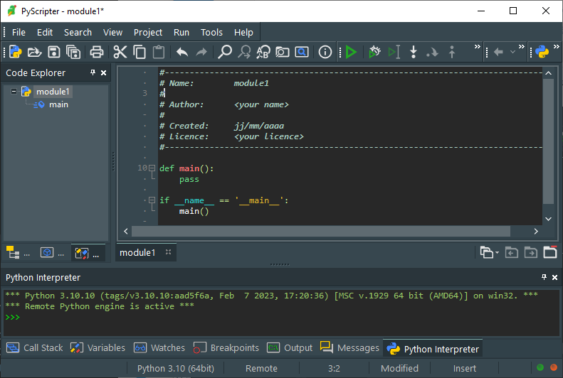

Appel de fonctions
Nous avons déjà utilisé des fonctions comme print() ou len() qui sont des fonctions prédéfinies par Python. Un programme utilise beaucoup de ces fonctions Python, mais il est aussi souvent très utile de créer nos propres fonctions, ce qui présente de nombreux avantages :
Noter ici la différence avec une fonction mathématique.
-
Modularité : Les fonctions permettent de découper un programme en petites parties indépendantes, ce qui facilite la lisibilité et la résolution de problèmes complexes.
-
Réutilisabilité : Une fois qu'une fonction est définie, elle peut être appelée plusieurs fois sans avoir à réécrire le même bloc de code à chaque fois.
-
Testabilité : Les fonctions sont des séquences isolées de code qui peuvent être testées individuellement.
Cours
Une fonction est définie (ou « déclarée ») par :
- le mot réservé
def(pour define), - son nom,
- zéro, un ou plusieurs paramètres écrits entre parenthèses (les parenthèses sont obligatoires même quand il n'y a pas de paramètres) et séparés par des virgules,
- deux-points
:, - une séquence d'instructions indentées (le « corps » de la fonction).
Comme pour les noms de variables, le nom d'une fonction :
-
s'écrit en lettres minuscules («
a» à «z») et majuscules («A» à «Z») et peut contenir des chiffres («0» à «9») et le caractère blanc souligné («_») ; -
ne doit pas comporter d'espace, de signes d'opération «
+», «-», «*» ou «/», ni de caractères spéciaux comme des signes de ponctuation «'», «"», «,», «.», «:», «@», etc. ; -
ne doit pas commencer par un chiffre ;
-
ne doit pas être un mot réservé de Python, par exemple «
for», «if», «print», etc. ; et -
est sensible à la casse, ce qui signifie que les fonctions «
TesT», «test» ou «TEST» sont différentes.
De la même façon que dans les constructions élémentaires vues précédemment (if-else, while, for), c'est l'indentation qui suit les deux-points qui détermine le bloc d'instructions qui forment la fonction.
Lorsqu'une fonction est définie dans un programme, elle ne s'exécute pas automatiquement. Et ceci même si la fonction comporte une erreur, l'interpréteur Python ne s'en aperçoit pas.
Définir une fonction consiste simplement à décrire son comportement et à lui donner un nom. Pour exécuter la fonction, il faut l'appeler depuis un programme ou depuis la console Python en écrivant son nom suivi des parenthèse.
 Quand la fonction n'a pas de paramètres, il faut quand même mettre les parenthèses pour l’appeler.
Quand la fonction n'a pas de paramètres, il faut quand même mettre les parenthèses pour l’appeler.
Ici le programme définit une fonction mais ne l'appelle pas. Elle peut être appelée depuis la console :
Il faut définir une fonction avant de l'appeler. Ces deux programmes affichent un message d'erreur :
bonjour est appelée avant d'être définie, le programme affiche un message d'erreur :
La fonction bonjour est appelée avant d'être définie, le programme affiche un message d'erreur :
La fonction main()

PyScripter, comme d'autres IDE (Integrated Development Environment), génère automatiquement une fonction appelée main avec le code suivant :
En Python, comme dans la plupart des langages de programmation, il y a une fonction principale, appelée souvent main(). Elle sert de point de départ de l'exécution d'un programme.
L'interpréteur Python exécute tout programme linéairement de haut en bas, donc il n'est pas indispensable de définir cette fonction main() dans chaque programme, mais il est recommandé de le faire dans un long programme découpés en plusieurs fonctions afin de mieux comprendre son fonctionnement.
Paramètres et arguments
Cours
Même si dans la pratique les deux termes sont souvent confondus par abus de langage, il faut faire la différence entre :
-
Les paramètres (ou paramètres formels) d'une fonction sont des noms de variables écrits entre parenthèses après le nom de la fonction qui sont utilisées par la fonction.
-
Les arguments (ou paramètres réels) sont les valeurs qui sont données aux paramètres lorsque la fonction est appelée.
On appelle une fonction en écrivant son nom suivi des arguments entre parenthèses.
Prenons en exemple une fonction simple :
La fonction bonjour est définie en ligne 1 par « def bonjour(prenom1, prenom2): » avec deux paramètres prenom1 et prenom2. Elle est ensuite appelée à la ligne 4, bonjour('Tom', 'Lea'), en lui passant les arguments 'Tom' et 'Lea', ce sont les valeurs que prennent les deux paramètres prenom1 et prenom2 pendant l'exécution de la fonction.
prenom1 prend la valeur du premier argument quand on appelle cette fonction bonjour et prenom2 la valeur du deuxième. prenom1et prenom2 sont appelés des paramètres positionnels (en anglais positional arguments). Il est obligatoire de leur donner une valeur quand on appelle une fonction. Par défaut, les paramètres prennent les valeurs des arguments dans l'ordre de leurs positions respectives, dans l'exemple ci-dessus prenom1 prend la valeur 'Tom' et prenom2 la valeur 'Lea', comme indiqué par leur position.
Néanmoins il est possible de changer l'ordre des arguments en précisant le nom du paramètre auquel chacun correspond. Par exemple, ces deux appels de fonctions sont identiques :
>>> bonjour('Tom', 'Lea')
hello Tom and Lea
>>> bonjour(prenom2 = 'Lea', prenom1 = 'Tom')
hello Tom and Lea
Dans tous les cas, il faut appeler une fonction avec suffisamment d'arguments pour tous ses paramètres positionnels, sinon la fonction ne peut pas s’exécuter et affiche un message d'erreur  :
:
>>> bonjour('Tom')
Traceback (most recent call last):
File "<interactive input>", line 1, in <module>
TypeError: bonjour() missing 1 required positional argument: 'prenom2'
En plus des paramètres positionnels qui sont obligatoires, il existe des paramètres qui sont facultatifs ayant une valeur d'argument par défaut s'il ne sont pas renseignés, c'est-à-dire la valeur que prendra un paramètre si la fonction est appelée sans argument correspondant.
PEP 8
Pas d'espace autour du égal (=) dans le cas des paramètres par mot-clé (à la différence de l'affectation où ils sont recommandés).
Ici, lorsque la fonction est définie à la ligne 1 par « def bonjour(prenom1, prenom2='Lisa'): », la valeur de prenom2 est 'Lisa' par défaut, c'est la valeur qui est utilisée par la fonction quand elle est appelée sans argument correspondant. prenom2 est appelé un paramètre par mot-clé (en anglais keyword argument). Le passage d'un tel argument lors de l'appel de la fonction est facultatif.1
Comme les paramètres positionnels, il est possible de changer l'ordre des arguments en précisant le nom du paramètre auquel chacun correspond.
Prenons l'exemple d'une fonction avec un paramètre positionnel (obligatoire) et deux paramètres (facultatifs) :
def bonjour(prenom1, prenom2='Lisa', prenom3='Zoe'):
print('hello', prenom1, ',', prenom2, 'and', prenom3)
et comparons plusieurs appels de la fonction :
La fonction est appelée avec trois arguments sans mot-clé, ils sont pris dans l'ordre.
La fonction est appelée sans arguments alors qu'elle a un paramètre positionnel obligatoire, il y a une erreur : bug:.
La fonction est appelée avec deux arguments sans mot-clé, ils sont pris dans l'ordre. Le troisième paramètre utilise la valeur par défaut.
La fonction est appelée avec deux arguments, le premier est positionnel, le second correspondant au mot-clé du troisième paramètre. Le deuxième paramètre utilise la valeur par défaut.
La fonction est appelée avec les deux arguments par mot-clé, mais il manque l'argument positionnel obligatoire, il y a une erreur : bug:
La fonction est appelée avec deux arguments, le premier correspondant au mot-clé du troisième paramètre et le second correspond au paramètre positionnel. Il y a une erreur car les paramètres positionnels doivent être placés avant.
À noter :
Si une fonction est définie avec des paramètres positionnels et des paramètres par mot-clé, les paramètres positionnels doivent toujours être placés avant les paramètres par mot-clé : Écrire «
def bonjour (prenom1='Tim', prenom2):»
L'instruction return
Prenons l'exemple d'une fonction très pratique, prix qui permet d'afficher un prix en ajoutant la TVA. Cette fonction a deux paramètres, prix_ht le prix hors taxe d'un bien et tva le taux de TVA exprimé en pourcent et qui vaut 20 par défaut :
Mais comment afficher le prix total de plusieurs articles avec des taux de tva différents ? Par exemple un panier contenant un article de 100 euros à 5% de TVA et un autre article de 50 euros à 20% de TVA ?
>>> prix(100, 5) + prix(50)
105.0
60.0
Traceback (most recent call last):
File "<interactive input>", line 1, in <module>
TypeError: unsupported operand type(s) for +: 'NoneType' and 'NoneType'
Impossible de faire la somme des prix des deux articles ! Cette fonction montre très rapidement ses limites.
Plutôt que d'afficher le prix calculé, il est plus judicieux de le renvoyer.
Il n'y a pas de parenthèse à l'instruction return.
Voyons plus en détail la différence entre les deux fonctions avec print() et return.
Elles affichent toutes les deux le même résultat quand elles sont appelées dans la console :
Alors quelle est la différence ? Elle apparaît immédiatement si on appelle la fonction depuis le programme avec prix(100, 5):
Et si on essaye d'appeler la fonction depuis le programme avec print(prix(100, 5)):
105 quand print(prix_ttc) s'exécute puis None quand print(prix(100, 5)) s'exécute.
-
Avec
print()la première fonctionprixaffiche le résultat calculé dans la console mais ce résultat n'est plus utilisable dans la suite du programme, il est perdu ; -
par contre, avec
returnla seconde fonction renvoie le résultat calculé qui peut être utilisé par exemple pour faire d'autres opérations, pour l'affecter à une variable, ou encore comme argument d'une autre fonction, voire même pour être tout simplement affiché comme par exempleprint(prix(100, 5)).
Appelons prix(100, 5) et essayons d'affecter la valeur renvoyée par ces deux fonctions à une variable :
p a la valeur None, ce n'est probablement pas ce qui était attendu !
Dans le doute, de façon générale, il faut éviter d'afficher un résultat avec print() dans une fonction autre que la fonction main() et préférer renvoyer le résultat avec return.
Un autre point important à noter est qu'une fonction se termine immédiatement dès qu'une instruction return est exécutée.
Par exemple dans la fonction plus_petit(a, b) suivante2, qui renvoie le plus petit de deux nombres a et b :
le else en ligne 4 est inutile. On peut simplement écrire :
a est plus petit que b, la fonction se termine à la ligne 3 et le dernier return b ne sera jamais exécuté.
Pour finir, Une fonction peut aussi renvoyer plusieurs valeurs en même temps, séparées par des virgules, par exemple la fonction carre_cube(x) suivante renvoie le carré le cube d'un nombre x :
affiche (25, 125).
Cours
Le verbe "renvoyer" est préféré à "retourner" (anglicisme pour return).
Une fonction peut renvoyer une ou plusieurs valeurs avec l'instruction return.
La fonction se termine immédiatement dès qu'une instruction return est exécutée. Les instructions suivantes sont ignorées.
À noter :
S'il n'a pas d'instruction
returndans une fonction, elle renvoieNone3.
Exercice corrigé
Écrire une fonction est_premier(nombre) qui renvoie True si nombre est un nombre premier et False sinon.
Rappel : un nombre est premier s'il n'a que deux diviseurs, 1 et lui-même.
Aide
Le fait qu'une fonction se termine immédiatement après une instruction return est bien utile dans ce cas.
Pour vérifier si nombre est premier, il suffit de tester tous les entiers entre 2 et n-1 les uns après les autres pour trouver un diviseur autre que 1 et nombre. Dès qu'un diviseur est trouvé, inutile de continuer, le nombre n'est pas premier et dans ce cas l'instruction return False termine la fonction. Si aucun diviseur n'est trouvé après les avoir tous testés, la fonction se termine en renvoyant True.
Réponse
Appelons la fonction estpremieravec les arguments 13 et 21 :
div prend les valeurs 2, 3, etc. et aucune de ces valeurs n'est un diviseur de 13, l'instruction conditionnelle nombre % div == 0 n'est jamais vérifiée, la boucle se termine et la dernière instruction return True est exécutée, la fonction se termine.
div prend la valeur 2, ce n'est pas un diviseur de 21 (21 % 2 est égal à 1), la boucle continue.
div prend la valeur 3, c'est pas un diviseur de 21 (21 % 3 est égal à 0), l'instruction conditionnelle nombre % div == 0 est vérifiée, donc l'instruction return False est exécutée et la fonction se termine, la dernière instruction return True n'est jamais exécutée.
Fonction lambda
Cours
En Python, les fonctions lambda sont des fonctions extrêmement courtes, limitées à une seule expression, sans utiliser le mot-clé def.
Prenons par exemple une fonction qui ajoute deux valeurs :
Ici la fonction lambda est définie par l'expression lambda x, y: x + y qui comporte :
- le mot réservé
lambda, - suivi de deux paramètres
xetyplacés avant les deux-points, - deux-points
:, - l'expression de la valeur renvoyée
x + y, placée après les deux-points.
Le signe = affecte cette fonction à une variable, ici somme, c'est le nom de cette fonction.
L'instruction somme(3, 5) permet ensuite d'appeler la fonction avec deux arguments 3 et 5.
Exercice corrigé
Écrire la fonction cube qui renvoie le cube d'un nombre sous formes classique et lambda.
Réduite à une seule expression, les fonctions lambda permettent d'utiliser une instruction conditionnelle écrite sous une forme un peu différente que vue précédemment :
Portée de variables
Cours
La portée d'une variable désigne les endroits du programme où cette variable existe et peut être utilisée. En Python, la portée d'une variable commence dès sa première affectation.
Exemple : Les programmes suivants affichent un message d'erreur
a avant qu'elle ne soit définie, il affiche un message d'erreur :
Variables locales
Cours
Une variable définie à l'intérieur d'une fonction est appelée variable locale. Elle ne peut être utilisée que localement c'est-à-dire qu'à l'intérieur de la fonction qui l'a définie.
Tenter d'utiliser une variable locale depuis l'extérieur de la fonction qui l'a définie provoquera une erreur.
Exemple :
def affiche_a():
a = 1
print(f'valeur de a dans affiche_a : {a}')
affiche_a()
print(f'valeur de a dans le programme : {a}')
a elle est locale à affiche_a, le programme suivant affiche un message d'erreur :
>>>
Traceback (most recent call last):
File "<module1>", line 6, in <module>
NameError: name 'a' is not defined
Paramètres passés par valeur
Dans les exemples précédents (est_premier(13), etc.), les arguments utilisés en appelant les fonctions étaient des valeurs.
Les arguments utilisés dans l'appel d'une fonction peuvent aussi être des variables ou même des expressions. Les trois appels de fonctions suivants font le même chose :
>>> est_premier(13)
True
>>> a = 13
>>> est_premier(a)
True
>>> nombre = 6
>>> est_premier(2*nombre + 1)
True
Quand un argument de fonction est une variable (ou une expression contenant une variable), par exemple dans le cas de est_premier(a), c'est la valeur de cette variable (ou de cette expression) qui est passée au paramètre correspondant de la fonction. On dit que le paramètre est « passé par valeur ». Des modifications éventuelles de ce paramètre dans la fonction ne modifient pas la valeur de la variable qui a servit d'argument à la fonction. Et c'est le cas même quand le nom de la variable est identique au nom du paramètre de la fonction, c'est seulement sa valeur qui est passée à la fonction.
Cours
Une fonction ne peut pas modifier la valeur d'une variable passée en paramètre en dehors de son exécution. Les paramètres sont passés par valeur.
Exemple :
def ajoute_1(a):
a = a + 1
print(f'valeur de a dans ajoute_1 : {a}')
a = 1
ajoute_1(a)
print(f'valeur de a dans le programme : {a}')
La valeur de a est modifiée en 2 à l'intérieur de la fonction ajoute_1 pendant son exécution, mais pas dans le programme où elle garde sa valeur initiale de 1.
Variables globales
Sauf exception il est préférable d'utiliser uniquement des variables locales pour faciliter la compréhension des programmes et réduire l'utilisation de mémoire inutile, mais dans certains cas leur portée n'est plus suffisante.
Cours
Une variable définie en dehors de toute fonction est appelée variable globale. Elle est utilisable à travers l'ensemble du programme.
Elle peut être affichée par une fonction :
Mais ne peut pas être modifiée.
Ce programme affiche un message d'erreur :
>>>
Traceback (most recent call last):
File "<module1>", line 6, in <module>
File "<module1>", line 2, in affiche_a
UnboundLocalError: local variable 'a' referenced before assignment
On peut néanmoins essayer de lui assigner une nouvelle valeur :
def affiche_a():
a = 2
print(f'valeur de a dans affiche_a : {a}')
a = 1
affiche_a()
print(f'valeur de a dans le programme : {a}')
Mais dans ce cas, Python part du principe que a est locale à la fonction, et non plus une variable globale. L'instruction a = 2 a créé un nouvelle variable locale à la fonction, la variable globale n'a pas changé :
Dans certaines situations, il serait utile de pouvoir modifier la valeur d'une variable globale dans une fonction et que cette nouvelle valeur soit gardée dans le reste du programme. Pour cela, il faut utiliser le mot clef global devant le nom d'une variable globale utilisée localement afin d'indiquer qu'il faut modifier la valeur de la variable globale et non pas créer une variable locale de même nom :
def affiche_a():
global a
a = 2
print(f'valeur de a dans affiche_a : {a}')
a = 1
affiche_a()
print(f'valeur de a dans le programme : {a}')
a a été modifiée dans la fonction et que sa nouvelle valeur est gardée dans le reste du programme :
Cours
Une variable globale est accessible uniquement en lecture à l'intérieur des fonctions du programme. Pour la modifier il faut utiliser le mot-clé global.
Fonction récursive
Une fonction peut être appelée n'importe où dans un programme (après sa définition), y compris par elle-même.
Cours
Une fonction récursive est une fonction qui peut s'appeler elle-même au cours de son exécution.
Prenons pour exemple une fonction qui renvoie le produit de tous les nombres entiers entre 1 et \(n\). Ce produit est appelé factorielle de \(n\) et noté \(n!\).
\(n! = 1 \times 2 \times 3 \times 4 \times ... \times (n-1) \times n\)
Une simple boucle for permet de multiplier tous les entiers allant de 1 à n :
Mais il est aussi possible de remarquer que \(n! = (n - 1)! \times n\) et que \(1! = 1\), ce qui permet d'écrire un programme récursif suivant :
def factorielle_recursive(n):
if n == 1:
return 1
else:
return factorielle_recursive(n-1) * n # le else est facultatif
Il est impératif de prévoir une condition d'arrêt à la récursivité, sinon le programme ne s'arrête jamais ! On doit toujours tester en premier la condition d'arrêt, et ensuite, si la condition n'est pas vérifiée, lancer un appel récursif.
Exercice corrigé
Écrire une fonction récursive compte_a_rebours(n) qui affiche les nombres entiers à rebours allant de n à 0.